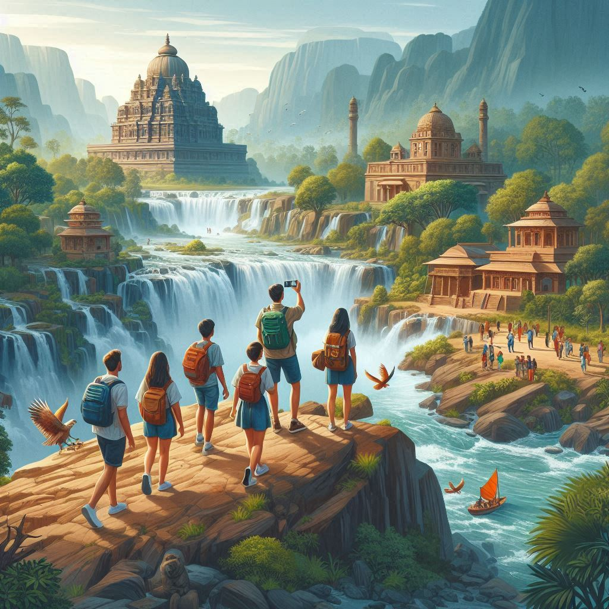
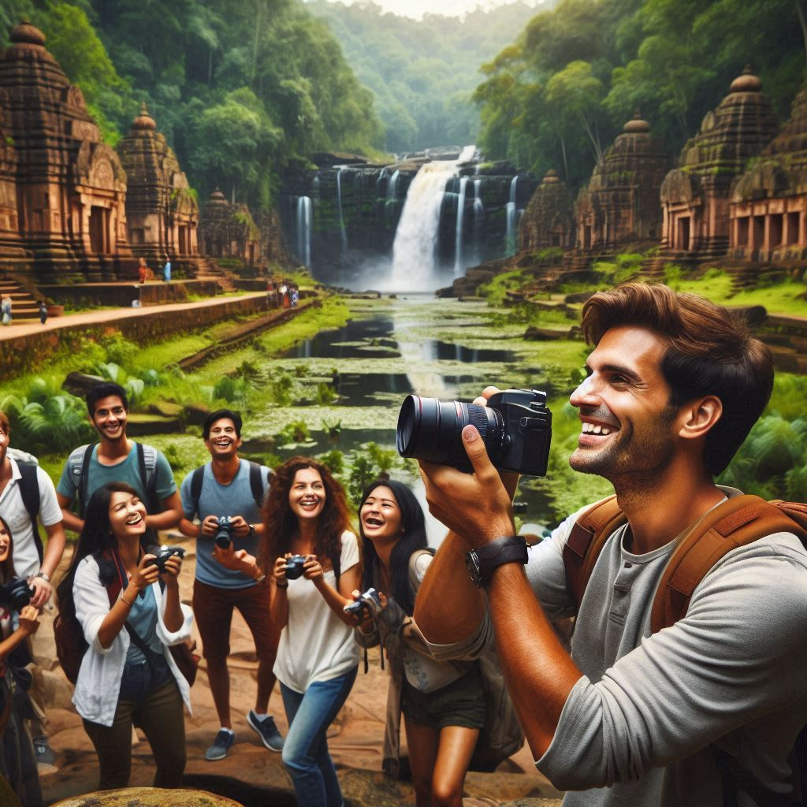

Chhattisgarh, with its rich cultural heritage, diverse landscapes, and historical significance, offers a variety of attractions for tourists. Here’s an overview of tourism in the state:
1. Natural Attractions
- Kanger Valley National Park: Located near Jagdalpur, this national park is known for its picturesque landscapes, dense forests, and biodiversity. It is home to various species of flora and fauna, including tigers, leopards, and various birds. The park also features stunning waterfalls and the famous Bastar Caves.
- Chitrakote Waterfall: Often referred to as the "Niagara of India," Chitrakote Waterfall is one of the largest waterfalls in India, cascading down from a height of about 30 meters. The best time to visit is during the monsoon season when the water flow is at its peak.
- Tirathgarh Waterfall: A beautiful waterfall located in the Kanger Valley National Park, Tirathgarh offers a serene environment and opportunities for picnicking and photography.
2. Cultural and Historical Sites
- Bastar Palace: Located in Jagdalpur, the Bastar Palace is a historical site showcasing the rich heritage of the Bastar region. The palace reflects the architectural style of the Gond dynasty and offers insights into the history of the area.
- Kankalit: This ancient site features rock paintings that date back thousands of years, providing a glimpse into the prehistoric life of the region's early inhabitants.
- Sirpur: An archaeological site with ancient temples and monasteries, Sirpur is known for its historical significance, showcasing the architectural brilliance of the Hindu and Buddhist eras. The Lakshmi Narayan Temple and Buddhist monasteries are major attractions here.
3. Tribal Culture and Heritage
- Bastar Dussehra: A unique festival celebrated in the Bastar region, Bastar Dussehra lasts for around 75 days and showcases the rich tribal culture, rituals, and traditions. Tourists can witness traditional dances, music, and local handicrafts during this festival.
- Tribal Villages: Visiting tribal villages such as Bastar, Kondagaon, and Dantewada provides an opportunity to experience the local way of life, art, crafts, and traditional cuisines. Tourists can interact with tribal communities and learn about their customs and traditions.
4. Adventure Tourism
- Trekking and Hiking: The hilly terrains and dense forests of Chhattisgarh offer excellent trekking and hiking opportunities. Popular trekking routes include the trails around Kanger Valley National Park and the forests of Bastar.
- Wildlife Safaris: Wildlife enthusiasts can enjoy safaris in national parks like Kanger Valley and Indravati National Park, where they can spot various species of wildlife, including tigers, leopards, and numerous bird species.


5. Pilgrimage Tourism
- Bhoramdeo Temple: Often referred to as the "Khajuraho of Chhattisgarh," the Bhoramdeo Temple is dedicated to Lord Shiva and features intricate sculptures and carvings. It is a significant pilgrimage site for Hindus.
- Rajim: Known as the "Prayag of Chhattisgarh," Rajim is an important pilgrimage site located at the confluence of the Mahanadi, Pairi, and Sondur rivers. The Rajiv Lochan Temple here attracts many devotees, especially during the annual Rajim Kumbh Mela.
6. Eco-Tourism
- Chhattisgarh’s Forests: The state is home to several eco-tourism initiatives, promoting sustainable tourism and conservation of natural resources. Eco-resorts and lodges provide opportunities for nature walks, birdwatching, and understanding local ecosystems.
7. Culinary Tourism
- Local Cuisine: Chhattisgarh offers a unique culinary experience, with traditional dishes such as chila, fara, and various tribal delicacies. Food festivals and local markets provide opportunities to taste authentic Chhattisgarhi cuisine.
Conclusion
Chhattisgarh is an emerging tourist destination in India, offering a blend of natural beauty, rich cultural heritage, and adventure activities. With its diverse attractions, from wildlife parks and waterfalls to historical sites and tribal experiences, Chhattisgarh has something for every type of traveler. The state’s commitment to promoting sustainable tourism and preserving its cultural identity makes it an exciting place to explore.